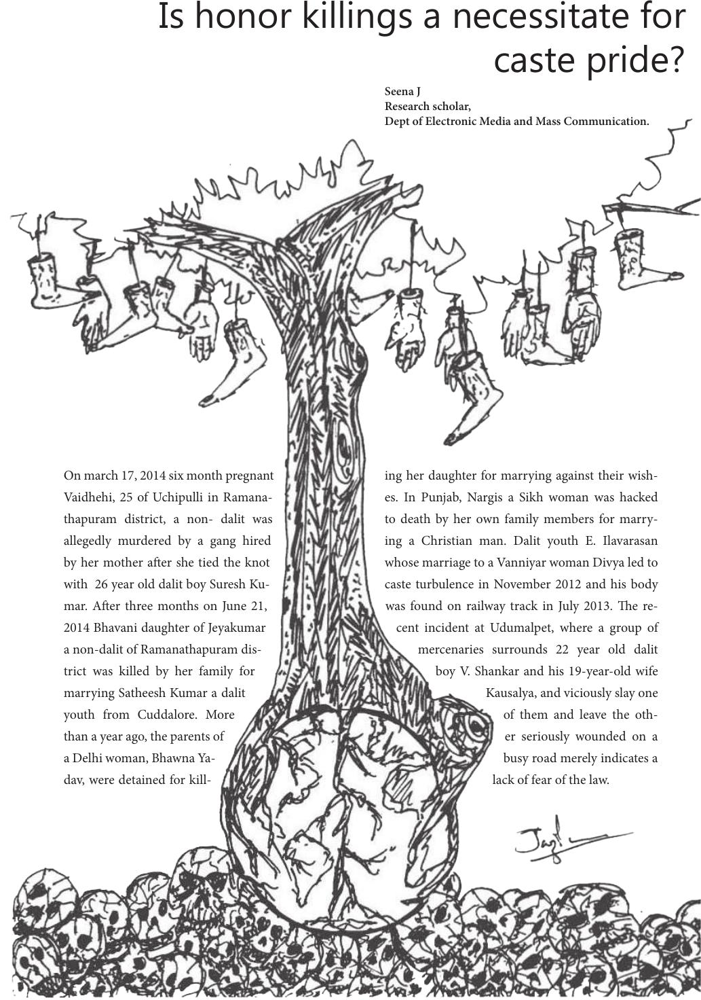

On march 17, 2014 six month pregnant
Vaidhehi, 25 of Uchipulli in Ramana-
thapuram district, a non- dalit was
allegedly murdered by a gang hired
by her mother aer she tied the knot
with 26 year old dalit boy Suresh Ku-
mar. Aer three months on June 21,
2014 Bhavani daughter of Jeyakumar
a non-dalit of Ramanathapuram dis-
trict was killed by her family for
marrying Satheesh Kumar a dalit
youth from Cuddalore. More
than a year ago, the parents of
a Delhi woman, Bhawna Ya-
dav, were detained for kill-
ing her daughter for marrying against their wish-
es. In Punjab, Nargis a Sikh woman was hacked
to death by her own family members for marry-
ing a Christian man. Dalit youth E. Ilavarasan
whose marriage to a Vanniyar woman Divya led to
caste turbulence in November 2012 and his body
was found on railway track in July 2013. e re-
cent incident at Udumalpet, where a group of
mercenaries surrounds 22 year old dalit
boy V. Shankar and his 19-year-old wife
Kausalya, and viciously slay one
of them and leave the oth-
er seriously wounded on a
busy road merely indicates a
lack of fear of the law.
Is honor killings a necessitate for
caste pride?
Seena J
Research scholar,
Dept of Electronic Media and Mass Communication.